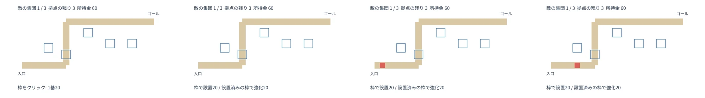
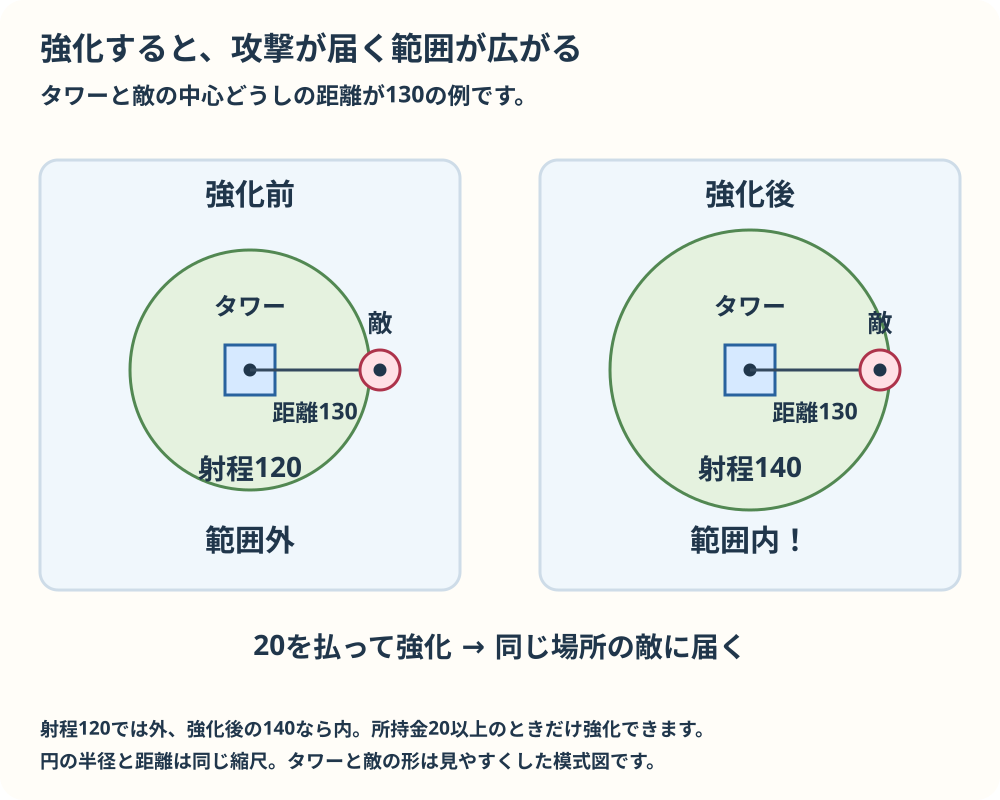

タワーディフェンスの発展
基本の完成版から3つの機能を順番に追加します。
始める前に
基本編の完成版から始めます。ZIPを展開してできたフォルダーでindex.htmlを開きます。ZIPには基本編の3ファイルが入っています。
WindowsでZIPを展開する（動画）
自分で作った基本版でも同じ内容なら使えます。
各段階の変更を上から順に作業用の script.js に加えます。変更前と同じ範囲を探して、変更後のコードに置き換えてください。保存したら index.html を開くか、再読み込みします。
ステップ 1：タワーを強化する
このステップの見本を図で見る

このステップの見本
if (state === "playing") ctx.fillText("枠をクリック: 1基20", 80, 410);
変わったコードの一例（script.js）if (state === "playing") ctx.fillText("枠で設置20 / 設置済みの枠で強化20", 80, 410);
見本で確かめること
3基置いた後は所持金が0なので強化できません。
目標
設置済みの枠をもう一度クリックしてタワーを強化します。
射程と攻撃の待ち時間を持たせる
Tower の constructor() で次の行の下に追加します。
目印
this.cooldown = 0;追加するコード
this.range = 120;
this.interval = 30;
this.level = 1;range は中心から敵までの射程、interval は発射後に待つ更新回数、level は強化の段階です。最初は射程120、待ち時間30、レベル1です。
強化後の色を変える
Tower.draw() の色を決める行を置き換えます。
置き換える範囲
ctx.fillStyle = "#3f78a9";置き換えるコード
ctx.fillStyle = this.level === 2 ? "#6b4aab" : "#3f78a9";レベル2のタワーは紫、それ以外は青で描きます。
強化できるか確かめる
Tower.update() の前に追加します。
目印
update() {
if (this.cooldown > 0) {追加するコード
upgrade() {
if (this.level === 2 || money < 20) return false;
money -= 20;
return true;
}
すでにレベル2か、所持金が20未満なら false を返し、お金を変えません。それ以外なら20を引いて強化を続けます。
強化後の値にする
Tower.upgrade() で所持金を減らす行の下に追加します。
目印
upgrade() {
if (this.level === 2 || money < 20) return false;
money -= 20;追加するコード
this.level = 2;
this.range = 140;
this.interval = 20;レベル2では射程140、待ち時間20です。中心間距離130の敵は射程120では外、140では内になります。

敵の中心までの距離が130なら、射程120のタワーには届きません。20を払って射程140へ強化すると、同じ場所の敵が範囲内になります。強化には所持金20以上が必要です。
円の半径120・140と距離130を同じ縮尺で比較しています。敵の端ではなく中心で判定します。攻撃間隔の変化は今回の図には含めません。
各タワーの射程を使う
Tower.update() の射程を調べる行を置き換えます。
置き換える範囲
if (enemy.alive && distance <= 120) {置き換えるコード
if (enemy.alive && distance <= this.range) {そのタワー自身の射程で敵までの距離を比べます。
各タワーの待ち時間を使う
Tower.update() の発射後の待ち時間を置き換えます。
置き換える範囲
this.cooldown = 30;置き換えるコード
this.cooldown = this.interval;強化済みなら短くなった間隔を使います。
強化の操作を表示する
draw() のプレイ中の案内を置き換えます。
置き換える範囲
if (state === "playing") ctx.fillText("枠をクリック: 1基20", 80, 410);置き換えるコード
if (state === "playing") ctx.fillText("枠で設置20 / 設置済みの枠で強化20", 80, 410);設置と強化にそれぞれ20必要なことを表示します。
設置済みのタワーを強化する
クリック処理で、既存のタワーを調べる行を置き換えます。
置き換える範囲
if (towers.some(tower => tower.x === spot.x && tower.y === spot.y)) return;置き換えるコード
const existing = towers.find(tower => tower.x === spot.x && tower.y === spot.y);
if (existing) {
existing.upgrade();
return;
}同じ枠のタワーを find() で探し、あれば upgrade() を呼んで新たな設置はしません。
保存して再読み込みし、設置済みの枠を再度クリックすると20を払って紫になり、射程と攻撃間隔が変わることを確かめます。
保存後の確認
保存してゲーム画面を更新する（動画）
index.html を再読み込みします。3基置いた後は所持金が0なので強化できません。敵を倒した報酬で20たまると強化できます。 この段階の見本を開く
小さな練習
強化後の射程140を150に変えて比べます。 練習後はコードを元に戻してください。
ステップ 2：速い敵と硬い敵
このステップの見本を図で見る
このステップの見本
if (distance <= 2) {
変わったコードの一例（script.js）if (distance <= this.speed) {
見本で確かめること
各集団で通常、速い敵、硬い敵の順に現れます。
目標
移動速度と体力の違う敵を出します。
敵の種類を覚える
Enemy の constructor() の始まりを置き換えます。
置き換える範囲
constructor() {
this.x = path[0].x;置き換えるコード
constructor(kind = "normal") {
this.kind = kind;
this.x = path[0].x;kind = "normal" は引数を省いたときの初期値です。受け取った種類をその敵の this.kind に入れます。
種類ごとに体力と速さを決める
Enemy の初期体力を決める行を置き換えます。
置き換える範囲
this.hp = 2;置き換えるコード
this.hp = kind === "tank" ? 4 : 2;
this.speed = kind === "fast" ? 3 : kind === "tank" ? 1 : 2;硬い敵 "tank" は体力4・速さ1、速い敵 "fast" は体力2・速さ3、通常は体力2・速さ2です。条件演算子 条件 ? A : B は条件が真ならA、それ以外はBを選びます。
種類ごとの速さで進む
Enemy.update() の到着判定と進む量をそれぞれ置き換えます。まず到着判定です。
置き換える範囲
if (distance <= 2) {置き換えるコード
if (distance <= this.speed) {一度に進む距離以下なら目標へそろえます。
移動量に速さを使う
同じ Enemy.update() の次の2行を置き換えます。
置き換える範囲
this.x += dx / distance * 2;
this.y += dy / distance * 2;置き換えるコード
this.x += dx / distance * this.speed;
this.y += dy / distance * this.speed;方向にその敵の速さを掛け、各自の位置を更新します。
種類ごとの色を描く
Enemy.draw() の色を決める行を置き換えます。
置き換える範囲
ctx.fillStyle = "#db6258";置き換えるコード
ctx.fillStyle = this.kind === "fast" ? "#e89b38" : this.kind === "tank" ? "#9e4863" : "#db6258";速い敵、硬い敵、通常の敵で色を変えます。
集団の順番で種類を選ぶ
外側の update() で敵を追加する行を置き換えます。
置き換える範囲
enemies.push(new Enemy());置き換えるコード
const kind = spawned === 1 ? "fast" : spawned === 2 ? "tank" : "normal";
enemies.push(new Enemy(kind));1体目は通常、2体目は速い敵、3体目は硬い敵です。
保存して再読み込みし、1つの集団に速さと色の違う敵が現れることを確かめます。
保存後の確認
各集団で通常、速い敵、硬い敵の順に現れます。 この段階の見本を開く
小さな練習
速い敵の3を2.5に変えて進み方を比べます。 練習後はコードを元に戻してください。
ステップ 3：最後にボスを出す
このステップの見本を図で見る
このステップの見本
const kind = spawned === 1 ? "fast" : spawned === 2 ? "tank" : "normal";
変わったコードの一例（script.js）const kind = wave === 3 && spawned === 2 ? "boss" : spawned === 1 ? "fast" : spawned === 2 ? "tank" : "normal";
見本で確かめること
最後に紫色のボスが現れ、防ぎきるとクリアです。
目標
最後の集団に体力の高いボスを出します。
ボスの体力と速さを決める
Enemy の constructor() で体力と速さの行を置き換えます。
置き換える範囲
this.hp = kind === "tank" ? 4 : 2;
this.speed = kind === "fast" ? 3 : kind === "tank" ? 1 : 2;置き換えるコード
this.hp = kind === "boss" ? 12 : kind === "tank" ? 4 : 2;
this.speed = kind === "boss" ? 1 : kind === "fast" ? 3 : kind === "tank" ? 1 : 2;"boss" は体力12、1回の更新で1進みます。ほかの種類の値もそのまま選びます。
ボスを別の色で描く
Enemy.draw() の色を決める行を置き換えます。
置き換える範囲
ctx.fillStyle = this.kind === "fast" ? "#e89b38" : this.kind === "tank" ? "#9e4863" : "#db6258";置き換えるコード
ctx.fillStyle = this.kind === "boss" ? "#632d66" : this.kind === "fast" ? "#e89b38" : this.kind === "tank" ? "#9e4863" : "#db6258";ボスには濃い紫を使います。
最後の集団にボスを出す
外側の update() で敵の種類を決める行を置き換えます。
置き換える範囲
const kind = spawned === 1 ? "fast" : spawned === 2 ? "tank" : "normal";置き換えるコード
const kind = wave === 3 && spawned === 2 ? "boss" : spawned === 1 ? "fast" : spawned === 2 ? "tank" : "normal";3回目の集団の3体目ならボス、それ以外はこれまでの順番です。spawned は作る前の数なので3体目では2です。
ボス到着で拠点を失う
update() の到着判定を置き換えます。
置き換える範囲
if (enemy.reached) lives--;置き換えるコード
if (enemy.reached && enemy.kind === "boss") lives = 0;
else if (enemy.reached) lives--;ボスが到着したら拠点の残りを0にします。ほかの敵の到着なら1減らします。
保存して再読み込みし、3回目の集団にボスが現れ、到着すると失敗になることを確かめます。
保存後の確認
最後に紫色のボスが現れ、防ぎきるとクリアです。 この段階の見本を開く
小さな練習
ボスの体力12を10に変えて比べます。 練習後はコードを元に戻してください。